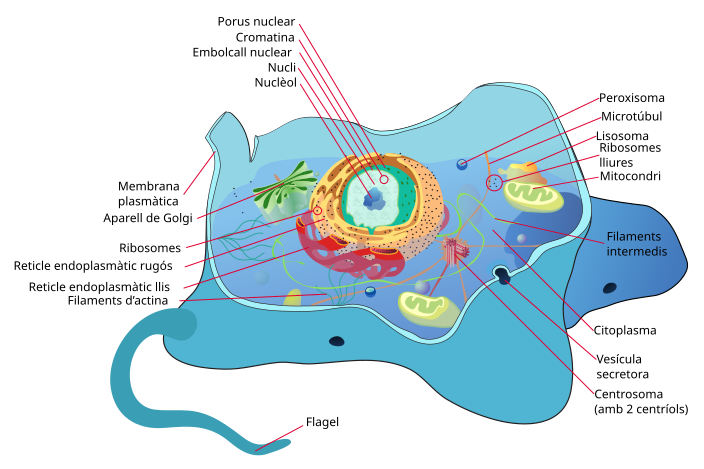

La cèl·lula
Què entra a la PAU
El cicle cel·lular, la mitosi, la meiosi i la comparació de les dues divisions són saber de 2n, al bloc de genètica i cicle cel·lular. També ho és la reproducció dels procariotes per bipartició, i el lligament i la recombinació (es lliguen amb el tema 4).
La teoria cel·lular, la membrana, el transport, l’osmosi i els orgànuls són saber de 1r. Les orientacions avisen que estan imbricats amb els de 2n: gairebé cada pregunta de metabolisme demana «on» passa la via, i això és un orgànul. Aquí es tracten al nivell que la prova fa servir, no com un catàleg de microscòpia.
2.1 Teoria cel·lular i microscòpia
La teoria cel·lular, tancada al segle XIX, diu tres coses: tot ésser viu està fet d’una o més cèl·lules; la cèl·lula és la unitat estructural i funcional de la vida; tota cèl·lula prové d’una altra cèl·lula. Els virus, els viroides i els prions queden fora: no tenen estructura cel·lular ni metabolisme propi.
El microscopi òptic fa servir llum i lents. El poder de resolució —la distància mínima per veure dos punts separats — és, en la pràctica, d’uns 0,2 µm. N’hi ha prou per a cèl·lules i bacteris grans, no per a virus ni per a la bicapa. El microscopi electrònic fa servir un feix d’electrons i resol nanòmetres: permet la ultraestructura (membranes, ribosomes). Les mostres per al microscopi electrònic van fixades, deshidratades i, si cal, contrastades amb metalls pesants; no s’hi veu una cèl·lula viva. Confondre «més augments» amb «més resolució» és un error: els augments buits no separen dos punts que l’instrument no pot distingir.
Un bacteri fa 8 mm a la fotografia i la barra d’escala diu que 5 mm corresponen a 1 µm. Quina mida real té?
Amb la barra d’escala: 8 mm ÷ (5 mm/µm) = 1,6 µm. Si en lloc de l’escala l’enunciat dona els augments (per exemple ×4 000), la mida real és la mida a la foto dividida pels augments: 8 mm / 4 000 = 0,002 mm = 2 µm. Unitats: 1 mm = 10³ µm = 10⁶ nm.
| Òptic | Electrònic | |
|---|---|---|
| Radiació | llum visible | feix d’electrons |
| Límit orientatiu | ~0,2 µm | nanòmetres |
| Es veu | nucli, mitosi, cloroplasts, bacteris | membranes, ribosomes, virus, porus |
| Mostra | pot ser viva (contrast de fase) | fixada i al buit, en el microscopi de transmissió clàssic |
Un virus de 100 nm es pot veure amb l’òptic de l’institut, que resol 0,2 µm?
No. 0,2 µm són 200 nm. El virus és més petit que el límit. Es veu amb l’electrònic. Un bacteri de 2 µm = 2000 nm sí que entra a l’òptic, com un punt o un bastonet, sense detalls interns.
Una micrografia mostra membranes internes, una doble membrana externa i uns grànuls foscos d’uns 20 nm enganxats a una membrana. Quin microscopi és, i què són els grànuls?
Mostra la resolució
Electrònic: l’òptic no resol 20 nm ni el gruix d’una membrana. Els grànuls enganxats a una membrana són ribosomes, i la membrana amb ribosomes és el reticle rugós. Si la doble membrana envolta un orgànul amb crestes, és un mitocondri; si envolta el material genètic, és el nucli.
Es diu que «la cèl·lula és la unitat anatòmica, fisiològica i d’origen». Traduïu cada adjectiu a una frase que no sigui un eslògan.
Mostra la resolució
Anatòmica: tot viu està fet de cèl·lules. Fisiològica: les funcions vitals es fan en una cèl·lula o en un conjunt de cèl·lules, i no hi ha res de viu més simple. D’origen: tota cèl·lula ve d’una altra. Les tres juntes són la teoria cel·lular. Cap no diu que tots els orgànuls tinguin membrana.
Una foto d’un nucli està feta a 1.000 augments amb un òptic i es veu borrós el límit. Pujar a 5.000 augments amb el mateix aparell mostrarà els porus nuclears?
No. Els augments amplien la imatge que l’objectiu ja ha resolt. El límit de l’òptic és al voltant de 0,2 µm, i un porus és més petit. Cal un electrònic. Més zoom sobre una imatge borrosa continua sent borrosa.
2.2 Procariotes i eucariotes
Els procariotes (bacteris i arqueus) no tenen nucli: el DNA és circular, està al nucleoide i no va dins un embolcall. No tenen orgànuls limitats per membrana. Els ribosomes són 70S. La paret dels bacteris porta peptidoglicà; la dels arqueus, no. Poden tenir càpsula, fímbries, pilus i flagel; el flagel bacterià és de flagel·lina i gira com una hèlix, i no té res a veure amb el flagel eucariota, fet de microtúbuls. El DNA extra pot anar en plasmidis. Es divideixen per bipartició: el DNA es replica, la cèl·lula s’allarga i es parteix. No hi ha mitosi ni fus.
Els eucariotes tenen nucli amb DNA lineal associat a histones, ribosomes 80S al citosol i un sistema d’endomembranes. La paret, si n’hi ha, és de cel·lulosa (plantes), quitina (fongs) o altres polímers; els animals no en tenen. Dins el grup eucariota cal separar la cèl·lula animal de la vegetal.
«Procariota» no vol dir «bacteri». Els arqueus també són procariotes i filogenèticament queden més a prop dels eucariotes que dels bacteris en la maquinària de replicació i transcripció. El detall és al tema 7.
Procariota i eucariota, costat a costat
| Procariota | Eucariota | |
|---|---|---|
| Nucli | no: DNA al nucleoide | sí, amb embolcall i porus |
| DNA | circular, un cromosoma principal | lineal, diversos cromosomes, amb histones |
| Orgànuls amb membrana | no | sí (mitocondri, reticle, Golgi…) |
| Ribosomes | 70S | 80S al citosol; 70S a mitocondris i cloroplasts |
| Paret | peptidoglicà (bacteris); sense, en arqueus | cel·lulosa, quitina o cap (animals) |
| Divisió | bipartició | mitosi; meiosi per als gàmetes |
Una cèl·lula té DNA circular, ribosomes 70S i paret sense peptidoglicà. És un bacteri?
No necessàriament. Encaixa amb un arqueu: procariota, però sense peptidoglicà. Un bacteri típic sí que en porta. Els mitocondris també tenen DNA circular i ribosomes 70S, però no són cèl·lules lliures ni tenen paret.
La diferència que la prova vol no és «el bacteri és petit». És la compartimentació. Sense embolcall nuclear, la transcripció i la traducció poden anar alhora al mateix lloc. Amb nucli, l’RNA s’ha de madurar i sortir. Sense mitocondri, la cadena respiratòria dels bacteris és a la membrana plasmàtica, no en un orgànul. Els ribosomes 70S (subunitats 50S i 30S) són els del bacteri, del mitocondri i del cloroplast. Els 80S (60S i 40S) són els del citosol eucariota. Els números no se sumen: 50 + 30 no fan 80 perquè el nom és un coeficient de sedimentació, no una massa que s’addicioni així.
La teoria endosimbiòtica explica per què el mitocondri i el cloroplast semblen bacteris per dins: doble membrana, DNA circular propi, ribosomes 70S i divisió autònoma. Un bacteri aerobi seria l’origen del mitocondri; un cianobacteri, el del cloroplast. No explica l’origen del nucli ni del reticle. I no vol dir que un mitocondri actual sigui un bacteri lliure: ha perdut la majoria dels gens, que són al nucli.
Una cèl·lula té DNA lineal amb histones, ribosomes 80S al citosol i també orgànuls amb DNA circular i ribosomes 70S. És un bacteri?
Mostra la resolució
No. El DNA lineal amb histones i els ribosomes 80S són d’eucariota. Els orgànuls amb DNA circular i ribosomes 70S són mitocondris o cloroplasts, la resta de l’endosimbiosi. Un bacteri no té alhora ribosomes 80S i orgànuls membranosos.
Per què un antibiòtic que bloqueja el ribosoma 70S pot matar un bacteri i, a dosis altes o amb mala entrada, també fer malbé mitocondris, però no atura directament el ribosoma del citosol humà?
Perquè el ribosoma citosòlic humà és 80S i l’antibiòtic no l’encaixa. El del mitocondri sí que és 70S, hereu bacterià. L’efecte útil és sobre el bacteri; l’efecte tòxic, si n’hi ha, s’explica pels mitocondris, no perquè «totes les cèl·lules tenen el mateix ribosoma».
Ordeneu de petit a gran: ribosoma 80S, virus típic, bacteri, mitocondri, cèl·lula animal. Qui es veu amb l’òptic?
Mostra la resolució
Ribosoma 80S (uns 25–30 nm), virus típic (de 20 a 300 nm; molts, al voltant de 100 nm), bacteri (1–5 µm), mitocondri (0,5–1 µm d’amplada i 1–3 µm de llarg; de l’ordre d’un bacteri petit), cèl·lula animal (10–30 µm). Amb l’òptic es veuen la cèl·lula, el bacteri i, al límit, el mitocondri com un grànul o un bastonet. El ribosoma i el virus, no.
Un llibre diu que els arqueus són bacteris antics. Quina correcció de domini cal fer?
Són procariotes, no bacteris. El domini Archaea és a part de Bacteria. Comparteixen l’absència de nucli i se separen per la paret, els lípids i la maquinària genètica, més propera a la dels eucariotes. Dir «bacteri» de tot el que no té nucli és un error.
2.3 La membrana: mosaic fluid
Singer i Nicolson (1972) van descriure la membrana com un mosaic fluid. La base és una bicapa de fosfolípids: caps polars cap a l’aigua (citosol i medi extern), cues d’àcid gras cap a l’interior. Les proteïnes integrals travessen la bicapa; les perifèriques s’hi adhereixen per una cara. Els lípids i bona part de les proteïnes es desplacen de costat: la membrana no és una paret rígida. El moviment flip-flop (passar d’una capa a l’altra) és rar sense enzims.
A les membranes animals el colesterol s’intercala entre les cues i n’esmorteeix la fluïdesa: l’abaixa si fa calor i evita que la membrana es geli si fa fred. El glicocàlix —oligosacàrids units a lípids i a proteïnes de la cara externa — intervé en el reconeixement (grups sanguinis, identitat cel·lular). La cara externa i la interna no són iguals: la membrana és asimètrica.

Integral vol dir que travessa la bicapa o hi està enfonsada: per treure-la cal desfer la membrana amb detergent. Perifèrica vol dir que és a una cara, unida per interaccions febles a un cap de fosfolípid o a una proteïna integral, i se’n va amb un canvi de sal. Les dues són proteïnes de membrana. No són «una de lípid i una de proteïna».
| Peça | On és al dibuix | Funció |
|---|---|---|
| Cues dels fosfolípids | interior de la bicapa | barrera hidròfoba |
| Caps polars | les dues cares | contacte amb l’aigua |
| Proteïna integral | travessa la bicapa | canal o transportador |
| Proteïna perifèrica | una cara | suport, senyal, citoesquelet |
| Glicolípid i glicoproteïna | cara externa | identitat de la cèl·lula |
| Colesterol | entre les cues, en animals | tampó de fluïdesa |
Una cèl·lula es posa a 10 °C i la membrana es torna massa rígida. Quins dos canvis de composició, no de temperatura, la farien més fluida?
Més àcids grassos insaturats (els colzes cis impedeixen l’empaquetament) i cues més curtes. El colesterol, a baixa temperatura, també evita la gelificació, però a la resposta de batxillerat el que es valora primer és la insaturació. Pujar la temperatura també fluidifica, però l’enunciat demana composició.
Per què la glucosa no travessa sola la bicapa, si és una molècula petita, i l’O₂ sí?
Mostra la resolució
L’O₂ és apolar i petit: es dissol a les cues i passa per difusió simple. La glucosa té molts OH, és polar, i les cues hidròfobes la frenen. Necessita un transportador (GLUT, difusió facilitada, a favor de gradient). Que sigui petita no basta: el criteri és la polaritat.
Es renta una membrana amb una dissolució salina i se’n desprenen unes proteïnes. Després cal un detergent per desprendre’n unes altres. Quines són perifèriques i quines integrals?
Mostra la resolució
Les que surten amb sal són perifèriques: estaven unides per interaccions iòniques o ponts d’hidrogen. Les que necessiten detergent són integrals: travessen o s’enfonsen a la bicapa, i el detergent dissol les cues. El detergent no «talla» la proteïna; li treu l’entorn lipídic.
El glicocàlix es troba a la cara externa, no a la citosòlica. Quina conseqüència té això per al reconeixement entre cèl·lules?
Els sucres que identifiquen la cèl·lula miren cap a les altres cèl·lules i cap al medi, que és on hi ha els receptors que els han de llegir. A la cara de dins no servirien per a aquest diàleg. L’asimetria de la membrana és funcional, no decorativa.
2.4 Transport i osmosi
La bicapa deixa passar per difusió simple les molècules petites i apolars (O2, CO2, N2) i, poc, l’aigua, que passa sobretot per canals específics (aquaporines). No deixa passar ions ni molècules polars grans com la glucosa. La difusió facilitada fa servir canals o transportadors i va a favor de gradient: no gasta ATP. La glucosa entra a moltes cèl·lules per transportadors GLUT, a favor de gradient.
El transport actiu va en contra de gradient i gasta energia, gairebé sempre ATP. La bomba Na⁺/K⁺ ATPasa treu 3 Na⁺ i entra 2 K⁺ per cada ATP. Manté el potencial de membrana i el gradient que després fan servir altres transportadors (el simport de glucosa a l’intestí, que aprofita l’entrada de Na⁺).
Les partícules grosses no travessen la bicapa. L’endocitosi tanca un tros de membrana cap endins: fagocitosi (sòlids, com un macròfag), pinocitosi (gotes) o endocitosi mediada per receptor (específica, com la del colesterol-LDL). L’exocitosi fusiona una vesícula amb la membrana i aboca el contingut a fora. Totes dues gasten energia i mouen tros de membrana.
L’osmosi és la difusió neta d’aigua a través d’una membrana semipermeable, cap al costat on la concentració de solut és més alta (on el potencial hídric és més baix). En un medi hipotònic (poc solut fora) l’aigua entra: la cèl·lula animal s’infla i pot lisar-se; la vegetal es posa turgent i la paret n’atura el trencament. En un medi hipertònic l’aigua surt: l’animal es crenela; la vegetal es plasmolitza (la membrana se separa de la paret). En un medi isotònic no hi ha flux net. Els procariotes amb paret es comporten, davant l’osmosi, més com la vegetal que com l’animal: la paret limita l’entrada d’aigua.
Una cèl·lula vegetal es plasmolitza. El medi extern és hipotònic o hipertònic? Per on ha circulat l’aigua?
Mostra la resolució
Hipertònic: hi ha més solut fora, l’aigua surt de la cèl·lula i el protoplast es desenganxa de la paret. Si el medi fos hipotònic, la cèl·lula es posaria turgent.
Cada transport, amb el seu gradient
| Tipus | Proteïna? | Gradient | ATP directe? | Exemple |
|---|---|---|---|---|
| Difusió simple | no | a favor | no | O₂, CO₂, N₂, etanol |
| Difusió facilitada | canal o transportador | a favor | no | glucosa per GLUT, ions per un canal obert |
| Actiu primari | bomba | en contra | sí | bomba Na⁺/K⁺ |
| Actiu secundari | cotransportador | un solut en contra, pagat pel gradient d’un altre | no en el mateix pas; la bomba sí que n’ha gastat abans | glucosa amb Na⁺ a l’intestí |
| Endocitosi i exocitosi | vesícules | — | sí, en el conjunt | fagocitosi, secreció |
Un eritròcit i una cèl·lula de fulla es posen en aigua destil·lada. Descriviu què li passa a cadascun i quina estructura explica la diferència.
Mostra la resolució
L’eritròcit s’infla i es lisa: no té paret. La cèl·lula de fulla s’infla fins que la paret de cel·lulosa ho atura i queda turgent. Totes dues són en un medi hipotònic i l’aigua hi entra. La diferència no és el sentit de l’osmosi, és la paret.
La bomba Na⁺/K⁺ treu 3 Na⁺ i entra 2 K⁺ per cada ATP. Per què es diu que el transport és en contra de gradient, si a la cèl·lula ja hi ha molt K⁺?
Precisament perquè ja n’hi ha molt. El K⁺ entra contra el seu gradient de concentració (fora n’hi ha poc) i el Na⁺ surt contra el seu (fora n’hi ha molt). L’ATP paga aquests dos gradients. El desequilibri de càrregues (surt una càrrega neta positiva) contribueix al potencial de membrana, negatiu per dins.
Un canal iònic obert deixa passar K⁺ a favor de gradient. És transport actiu, perquè hi ha una proteïna?
No. La proteïna no decideix si és actiu: ho decideix el sentit respecte del gradient i la despesa d’energia. Un canal obert és difusió facilitada. Actiu és anar en contra, amb bomba o amb cotransport.
La glucosa entra a l’eritròcit per GLUT, a favor de gradient, sense ATP. Entra a l’epiteli intestinal contra gradient, amb Na⁺. Per què no és una contradicció?
Són dues proteïnes i dos contexts. Al glòbul vermell la glucosa és més concentrada al plasma que a dins (la cèl·lula la consumeix tot seguit), i GLUT és difusió facilitada. A l’intestí la cèl·lula l’ha d’acumular: el cotransportador fa servir el gradient de Na⁺, que la bomba Na⁺/K⁺ manté gastant ATP. El mateix solut pot travessar de les dues maneres segons la cèl·lula.
Tres casos. A: O₂ entra sense proteïna. B: glucosa entra a favor de gradient amb una proteïna, sense ATP. C: Na⁺ surt contra de gradient gastant ATP. Poseu el nom de cada transport i digueu quin es pararia primer si no hi hagués ATP, i quin no se’n ressentiria.
Mostra la resolució
A és difusió simple. B, difusió facilitada. C, transport actiu primari. Sense ATP es para C de seguida. B continua mentre duri el gradient de glucosa. A no depèn ni de proteïna ni d’ATP. A la llarga, els gradients que mantenen algunes difusions facilitades els ha creat una bomba, i també cauran; però el que es para de manera directa és l’actiu.
2.5 Orgànuls
El nucli guarda el DNA lineal, separat del citosol per una doble membrana amb porus. El nuclèol és la regió on es transcriu l’RNA ribosòmic i es munten les subunitats dels ribosomes.
El reticle endoplasmàtic rugós, amb ribosomes a la cara citosòlica, sintetitza proteïnes que aniran a la secreció, a la membrana o als lisosomes. El reticle llis sintetitza lípids, detoxifica i, al múscul, emmagatzema Ca²⁺. L’aparell de Golgi rep vesícules del reticle, madura les proteïnes (glicosilació), les classifica i les envia. Els lisosomes porten hidrolases àcides. Els peroxisomes oxiden substrats i generen, i després desfan, peròxid d’hidrogen.
El mitocondri té dues membranes. L’externa és permeable a molècules petites; la interna, plegada en crestes, és on hi ha la cadena respiratòria i l’ATP-sintasa. L’espai entre membranes acumula protons. A la matriu hi ha el cicle de Krebs, la descarboxilació del piruvat i la β-oxidació, a més de DNA circular propi i ribosomes 70S. El cloroplast, també amb doble membrana, DNA propi i ribosomes 70S, té tilacoides apilats en grana: a la membrana del tilacoide hi ha la fase lluminosa, i a l’estroma el cicle de Calvin.
La cèl·lula vegetal afegeix paret de cel·lulosa, vacúol gran (turgència, reserva, pigments) i cloroplasts, i es comunica per plasmodesmes. No té centríols: el fus de la mitosi es munta igualment. La cèl·lula animal té centríols, lisosomes ben desenvolupats i, en general, vacúols petits. Totes dues tenen citoesquelet (microtúbuls, filaments d’actina, filaments intermedis), que dona forma, mou vesícules i forma el fus.

Mitocondris i cloroplasts s’assemblen a procariotes (DNA circular, ribosomes 70S, doble membrana). És la base de l’endosimbiosi, al tema 6. No són «la prova» tots sols, però encaixen amb la filogènia dels seus genomes.
Glucòlisi i fermentació: citosol. Piruvat, Krebs i β-oxidació: matriu mitocondrial. Cadena i ATP-sintasa: membrana interna. Fotosíntesi lluminosa: tilacoide. Calvin: estroma. Transcripció del DNA nuclear: nucli. Traducció de proteïnes citosòliques: ribosomes 80S lliures. Proteïnes de secreció: reticle rugós i després Golgi.
Cèl·lula animal i cèl·lula vegetal
| Animal | Vegetal | |
|---|---|---|
| Paret | no | sí, de cel·lulosa, per fora de la membrana |
| Cloroplasts | no | sí, a les cèl·lules fotosintètiques |
| Vacúol | petits, si n’hi ha | un de gran, amb turgència |
| Centríols | sí | no, i el fus es munta igualment |
| Lisosomes | evidents | menys habituals; el vacúol fa part d’aquest paper |
| Nutrició | heteròtrofa | autòtrofa si hi ha cloroplasts |
Una micrografia mostra una cèl·lula amb paret, un vacúol que ocupa gran part del volum i orgànuls verds amb membranes internes apilades. És animal o vegetal? On és el Calvin?
Mostra la resolució
Vegetal. Els orgànuls verds són cloroplasts. El Calvin és a l’estroma, no als tilacoides.
On és cada procés
La pregunta «on» de la PAU es contesta amb aquesta taula, no amb un sinònim. El reticle rugós és continu amb l’embolcall nuclear i porta ribosomes: proteïnes de secreció, de membrana i dels lisosomes. El reticle llis no en porta: lípids, destoxificació, reserva de Ca²⁺ al múscul. El Golgi és una pila de sacs separada: rep vesícules del reticle, madura les proteïnes (glicosilació) i les classifica. Confondre la pila del Golgi amb la xarxa del reticle és un error de forma, no només de nom.
| Procés | Lloc, en un eucariota animal |
|---|---|
| Glucòlisi | citosol |
| Cicle de Krebs i β-oxidació | matriu mitocondrial |
| Cadena respiratòria i ATP-sintasa | membrana interna del mitocondri |
| Transcripció i replicació del genoma nuclear | nucli |
| Traducció de proteïnes citosòliques | ribosomes lliures |
| Traducció de proteïnes de secreció | ribosomes del reticle rugós |
| Fase lluminosa | membrana del tilacoide |
| Cicle de Calvin | estroma del cloroplast |
| Digestió intracel·lular | lisosomes |
El mitocondri té dues membranes. L’externa és permeable a molècules petites. La interna és la barrera de debò i es plega en crestes per cabre-hi més cadena. Entre les dues, l’espai intermembranós, on s’acumulen els protons. La matriu és el compartiment de dins. El cloroplast té tres compartiments: l’espai entre les dues membranes de l’embolcall, l’estroma i el lumen del tilacoide. Els protons de la fase lluminosa s’acumulen al lumen, no a l’estroma. L’ATP-sintasa del cloroplast deixa sortir aquests protons cap a l’estroma, que és on el Calvin gasta l’ATP.
Una cèl·lula vegetal de la fulla fa fotosíntesi i respira. En quin orgànul és el Calvin, en quin la cadena respiratòria, i l’oxigen que desprèn d’on surt?
Mostra la resolució
El Calvin és a l’estroma del cloroplast. La cadena respiratòria és a la membrana interna del mitocondri, no al cloroplast. L’oxigen de la fotosíntesi surt de la fotòlisi de l’aigua al fotosistema II, al lumen del tilacoide, no del CO₂. El CO₂ es fixa al Calvin i els seus oxígens acaben en sucre i en aigua, no com a O₂ lliure.
El nuclèol es veu dins el nucli i desapareix durant la mitosi. Què s’hi fabrica?
Les subunitats ribosòmiques: s’hi transcriu l’RNAr i s’hi munten amb proteïnes que han entrat del citosol. No és el lloc de la traducció. Quan el nucli es desmunta a la mitosi, el nuclèol també, i es refà a la telofase.
Per què un lisosoma no es menja la pròpia cèl·lula mentre és intacte?
Perquè els enzims hidrolítics estan tancats per una membrana i treballen a pH àcid, que la bomba de protons del lisosoma manté. Al citosol, a pH proper a 7, aquells enzims anirien molt més lents. Si la membrana es trenca massivament, sí que hi ha autòlisi. L’apoptosi no és això: és un programa ordenat, no un vessament.
Una proteïna de secreció es marca amb un aminoàcid radioactiu. Al cap de pocs minuts la marca és al reticle rugós; més tard, al Golgi; després, fora de la cèl·lula. Què demostra l’ordre, i per què no apareix primer al Golgi?
Mostra la resolució
Demostra el camí secretor: es sintetitza als ribosomes del rugós, es transporta en vesícules al Golgi, que la madura i l’envasa, i surt per exocitosi. No pot aparèixer primer al Golgi perquè el Golgi no tradueix: no té ribosomes enganxats. Si la marca sortís al citosol i prou, seria una proteïna citosòlica, feta en ribosomes lliures.
Els protons de la respiració s’acumulen a l’espai intermembranós, i els de la fotosíntesi al lumen del tilacoide. Quin error de localització es fa si es diu que en tots dos casos «s’acumulen a la matriu»?
La matriu és el compartiment intern del mitocondri, que és on els protons tornen, no on s’acumulen. Al cloroplast l’equivalent de la matriu, pel que fa al retorn, és l’estroma. El lumen del tilacoide és l’espai de concentració, com l’intermembranós. Dir matriu per a tots dos esborra la diferència i posa el gradient al revés.
Ompliu el lloc, en una cèl·lula vegetal: fotòlisi, Calvin, Krebs, cadena respiratòria, síntesi de proteïnes de secreció.
Mostra la resolució
Fotòlisi: lumen del tilacoide, al fotosistema II. Calvin: estroma. Krebs: matriu del mitocondri. Cadena respiratòria: membrana interna del mitocondri. Proteïnes de secreció: es comencen al reticle rugós i es maduren al Golgi. Cap d’aquests llocs no es pot intercanviar. El mitocondri no fa el Calvin i el cloroplast no fa el Krebs.
2.6 Cicle cel·lular
El cicle es parteix en interfase i fase M. La interfase no és «repòs»: a G1 la cèl·lula creix i fa el que li toca; a S replica el DNA (cada cromosoma passa a tenir dues cromàtides germanes, unides pel centròmer); a G2 es prepara la mitosi. Una cèl·lula que no es divideix es queda en G0. La fase M és la mitosi més la citocinesi.
Hi ha punts de control. A final de G1 es comprova la mida, els nutrients i que el DNA no estigui danyat abans de replicar. A final de G2, que la replicació s’hagi acabat. A la mitosi, que els cromosomes estiguin units al fus abans de separar les cromàtides. Els complexos ciclina-CDK obren i tanquen aquests passos. Si el dany no es repara, la cèl·lula pot entrar en apoptosi. Quan els controls fallen i la cèl·lula es divideix sense fre, el risc és un tumor: el lligam amb oncogens i gens supressors és al tema 5.
El nom de cada ciclina (D, E, A, B) i de cada CDK no es demana. N’hi ha prou amb «ciclines i CDK» i amb els tres controls.
La interfase no és un descans: és G1, S i G2. A G1 la cèl·lula creix i fa la seva funció; si és diploide, el contingut de DNA és 2C (C és el contingut d’un joc haploide de cromosomes). A S es replica tot el genoma i el contingut passa a 4C. A G2 cada cromosoma ja té dues cromàtides, encara descondensades, i la cèl·lula comprova que la replicació s’ha acabat abans d’entrar a la mitosi. Un cromosoma amb dues cromàtides es compta com un sol cromosoma fins que les cromàtides se separen a l’anafase.
| Moment | DNA (cèl·lula 2n) | Cromosomes visibles? | Cromàtides per cromosoma |
|---|---|---|---|
| G1 | 2C | no, cromatina | 1 |
| Després de S, i a G2 | 4C | no | 2 |
| Metafase | 4C | sí, al pla equatorial | 2 |
| Després de l’anafase, cada nucli fill | 2C | es descondensen | 1 |
Una cèl·lula 2n = 46 acaba la fase S. Quants cromosomes té, quantes cromàtides i quant DNA respecte de G1?
Mostra la resolució
Continua tenint 46 cromosomes. Cada un té 2 cromàtides, o sigui 92 cromàtides. El DNA és el doble que a G1 (4C en lloc de 2C). L’error és dir que té 92 cromosomes ja a la fase S: això només passa, i un instant, quan les cromàtides se separen a l’anafase i cada una compta com un cromosoma. Abans de la citocinesi n’hi ha 92 al conjunt, i cada nucli fill en torna a tenir 46.
Un gràfic de quantitat de DNA al llarg del temps és pla, puja suaument fins al doble, es manté, i cau a la meitat de cop. Quines fases són cada tram?
El pla inicial és G1. La pujada és S (replicació, no és instantània). El pla de dalt és G2 i la mitosi fins a l’anafase. La caiguda a la meitat és la divisió: cada filla se’n queda la meitat. Si el gràfic caigués a la quarta part, no seria una mitosi.
Un fàrmac impedeix la replicació del DNA però no afecta el muntatge del fus. En quina fase s’atura el cicle, i les cèl·lules que ja eren a G2 es divideixen?
Mostra la resolució
S’atura a l’entrada de S, o dins de S, les que encara no han copiat el DNA. Les que ja han acabat S i són a G2 tenen el DNA duplicat: el punt de control de G2 les pot deixar passar si no detecta dany, i es divideixen. El fàrmac no és un inhibidor de la mitosi. Un inhibidor del fus aturaria a la metafase, que és un altre punt.
Per què una cèl·lula que passa el control de la metafase amb un cromosoma sense cinetocor enganxat arrisca una filla amb un cromosoma de més i una altra amb un de menys?
Perquè la separació de les cromàtides no queda assegurada si el fus no estira les dues bandes. Una filla es queda les dues cromàtides d’aquell cromosoma, o cap. És una aneuploïdia. El control existeix per impedir l’anafase fins que tots els cinetocors noten tensió.
2.7 Mitosi
La mitosi reparteix una còpia idèntica del DNA a dues cèl·lules filles. El nombre de cromosomes es manté: d’una cèl·lula 2n en surten dues de 2n. En humans, 46 cromosomes abans i 46 després. No genera varietat genètica, més enllà d’alguna errada rara.
A la profase els cromosomes es condensen i es veuen les dues cromàtides; es forma el fus i, a la prometafase, es trenca l’embolcall nuclear i els microtúbuls s’ancoren al cinetocor. A la metafase els cromosomes s’alineen a la placa equatorial. A l’anafase es trenquen les cohesines del centròmer i cada cromàtide germana, que a partir d’ara ja és un cromosoma, marxa cap a un pol. A la telofase es refà l’embolcall i els cromosomes es descondensen. La citocinesi parteix el citoplasma: en animals, per un anell d’actina; en vegetals, per una placa cel·lular que esdevé paret.
La funció és créixer, renovar teixits i, en molts organismes, reproduir-se asexualment. Una ferida que cicatritza ho fa per mitosi, no per meiosi.
| Fase | Què es veu | Què no s’ha de dir |
|---|---|---|
| Profase | la cromatina es condensa, el nuclèol desapareix, el fus comença | que els cromosomes ja són a l’equador |
| Prometafase | l’embolcall es fragmenta i els microtúbuls enganxen el cinetocor | que és un sinònim de metafase |
| Metafase | tots els centròmers al pla equatorial | que les cromàtides ja s’han separat |
| Anafase | se separen les cromàtides germanes i cada pol en rep una de cada cromosoma | que se separen homòlegs (això és l’anafase I de la meiosi) |
| Telofase | es refan dos embolcalls i la cromatina es descondensa | que ja hi ha dues cèl·lules: això és la citocinesi |
La citocinesi animal és un anell d’actina i miosina que estreny la membrana. La vegetal és una placa cel·lular que creix des del centre, feta amb vesícules de Golgi, i acaba essent paret. Les dues parteixen el citoplasma. Cap de les dues és una fase de la mitosi en sentit estricte, però la prova les demana juntes.
Compte amb el recompte. Una cèl·lula 2n = 4 entra en mitosi. A la metafase es veuen 4 cromosomes, cadascun amb 2 cromàtides. A l’anafase se’n veuen 8 peces (cada cromàtide ja és un cromosoma) repartides cap als dos pols, 4 i 4. Cada filla en té 4, igual que la mare. La mitosi conserva el nombre de cromosomes.
Un esquema mostra cromosomes de dues cromàtides alineats a l’equador i l’embolcall ja absent. És metafase o anafase? Què passarà al pas següent amb les cromàtides germanes?
Mostra la resolució
És metafase: alineats i encara amb dues cromàtides. Al pas següent, l’anafase, el centròmer es parteix i les germanes se separen cap a pols oposats. Si les peces que migressin fossin cromosomes sencers de dues cromàtides, seria anafase I de meiosi, no anafase de mitosi.
Per què la profase de la mitosi no té entrecreuament, si els cromosomes també es condensen?
Perquè no hi ha aparellament d’homòlegs. L’entrecreuament demana el complex sinaptonemal de la profase I, que ajunta el cromosoma matern i el patern. A la mitosi cada cromosoma es condensa pel seu compte. Condensar no és recombinar.
Una cèl·lula 2n = 8 és a l’anafase de la mitosi. Quants cromosomes es compten en aquell moment al conjunt de la cèl·lula, i quants en tindrà cada filla?
Mostra la resolució
16 al conjunt: les cromàtides ja s’han separat i cadascuna compta com un cromosoma, 8 cap a cada pol. Cada filla, un cop feta la citocinesi, en té 8. El nombre de la mare es conserva. Dir 8 cromosomes durant tota l’anafase, sense distingir el moment de la separació, és el que fa perdre el punt.
La citocinesi vegetal no estreny la membrana. D’on surt la placa que parteix la cèl·lula?
De vesícules del Golgi, carregades de polisacàrids de paret, que s’alineen al pla equatorial i es fusionen. La placa creix de dins cap a fora fins a trobar la paret antiga. No és un anell d’actina, que és el mecanisme animal. Les dues coses es diuen citocinesi i no són el mateix dibuix.
2.8 Meiosi
La meiosi redueix a la meitat el nombre de cromosomes i produeix quatre nuclis haploides, genèticament diferents. En animals dona gàmetes. Sense aquesta reducció, la fecundació duplicaria el nombre de cromosomes a cada generació.
La meiosi I és reduccional. A la profase I els homòlegs s’aparellen (sinapsi) i formen tètrades. Al paquitè es produeix l’entrecreuament: bescanvi de fragments entre cromàtides no germanes. És la recombinació. Després, a l’anafase I, se separen els cromosomes homòlegs, no les cromàtides germanes. Cada pol rep un homòleg de cada parell, triat a l’atzar (repartiment independent, la base de la segona llei de Mendel quan els gens són en cromosomes diferents). Les dues cèl·lules que en surten són haploides, però cada cromosoma encara té dues cromàtides.
La meiosi II és equacional i s’assembla a una mitosi: se separen les cromàtides germanes. El resultat són quatre cèl·lules n. En l’espermatogènesi humana, quatre espermatozoides. En l’ovogènesi, un òvul i cossos polars.
Dos gens situats al mateix cromosoma estan lligats: no s’hereten amb independència, llevat que un entrecreuament els separi. Com més lluny són, més probabilitat de recombinació. Una freqüència de recombinació del 50 % els fa indistingibles de gens de cromosomes diferents. El càlcul de problemes és al tema 4.
Un esquema mostra cromosomes homòlegs separant-se, encara amb dues cromàtides cadascun. És anafase de mitosi o anafase I de meiosi? Quina és la ploïdia de cada pol si la cèl·lula mare era 2n = 6?
Mostra la resolució
És anafase I: se separen homòlegs sencers. Cada pol rep 3 cromosomes (n = 3), encara duplicats. A l’anafase de la mitosi es veurien cromàtides soltes marxant cap als pols i cada pol acabaria amb 6 cromosomes.
Mitosi i meiosi
| Mitosi | Meiosi | |
|---|---|---|
| Nombre de divisions | 1 | 2 |
| Entrecreuament | no | sí, a la profase I |
| Què se separa a la primera anafase | cromàtides germanes | cromosomes homòlegs |
| Cèl·lules que en surten | 2, diploides, idèntiques | 4, haploides, diferents |
| Funció | créixer, renovar, reproduir-se sense gàmetes | fer gàmetes o espores i generar variació |
Si l’esquema mostra parelles de cromosomes (un de cada color, per exemple) que se separen encara amb dues cromàtides, és anafase I. Si mostra cromàtides soltes marxant cap als pols, pot ser anafase de mitosi o anafase II. El context (si abans hi ha hagut aparellament) ho decideix.
Una cèl·lula 2n = 8 entra en meiosi. Quants cromosomes hi ha a cada pol al final de l’anafase I, i quants a cada gàmeta al final de la meiosi II?
A l’anafase I cada pol rep 4 cromosomes (n = 4), encara duplicats. Després de la meiosi II, cada nucli té 4 cromosomes d’una sola cromàtide.
La meiosi fa quatre nuclis haploides a partir d’un diploide, i els fa diferents. La reducció de veritat és a la meiosi I: els homòlegs se separen i cada nucli es queda amb n cromosomes, encara duplicats (dues cromàtides). La meiosi II és semblant a una mitosi d’una cèl·lula haploide: se separen les cromàtides i els quatre nuclis queden amb n cromosomes d’una sola cromàtide. No hi ha fase S entre la meiosi I i la II. Si n’hi hagués, es perdria la reducció.
| Què s’aparella | Què se separa a l’anafase | n de cada nucli al final | Entrecreuament | |
|---|---|---|---|---|
| Meiosi I | homòlegs (bivalent) | els homòlegs, sencers | n, cromosomes encara duplicats | sí, a la profase I |
| Meiosi II | res | les cromàtides germanes | n, d’una cromàtide | no |
| Mitosi | res | les cromàtides germanes | 2n | no |
L’entrecreuament és un intercanvi de fragments entre cromàtides no germanes d’un bivalent. Passa a la profase I i es veu, més tard, com un quiasma. Fa que un cromosoma que arriba a un gàmeta no sigui una còpia intacta del matern o del patern. L’altra font de variació, independent d’aquesta, és el repartiment a l’atzar: cada pol de l’anafase I es queda amb una barreja de cromosomes materns i paterns. Amb n parells, hi ha 2n combinacions sense comptar l’entrecreuament. En humans, 2²³, més de 8 milions, i l’entrecreuament ho multiplica.
Una cèl·lula 2n = 6 entra en meiosi. Quants cromosomes hi ha a cada pol al final de l’anafase I? I al final de la meiosi II, a cada nucli? I quants bivalents s’han format a la profase I?
Mostra la resolució
Tres parells, o sigui 3 bivalents. A l’anafase I cada pol rep 3 cromosomes (n = 3), cadascun amb dues cromàtides. Al final de la meiosi II cada nucli té 3 cromosomes d’una cromàtide. L’error típic és dir que a l’anafase I cada pol en rep 6, o que els gàmetes en tenen 1,5.
Un esquema de meiosi mostra, a l’anafase, cromàtides soltes marxant cap als pols i cap parella d’homòlegs. Pot ser anafase I?
No. A l’anafase I el que marxa és un cromosoma sencer, amb dues cromàtides, perquè les germanes encara estan unides. Cromàtides soltes són anafase II o anafase de mitosi. Si a la cèl·lula no hi ha parells i el nombre ja és haploide, és anafase II.
Per què un gàmeta humà té 23 cromosomes i no 23 parells, i què passaria en la fecundació si la meiosi no reduís?
Els 23 parells són el 2n del cos. El gàmeta en porta un de cada parell: 23, n. A la fecundació 23 + 23 = 46. Si els gàmetes fossin diploides, el zigot en tindria 92 i el nombre es doblaria cada generació. La meiosi és el que ho impedeix.
Sense entrecreuament, un individu AaBb amb els dos gens en cromosomes diferents fa gàmetes. Quins genotips i en quina proporció? I si els dos gens estiguessin completament lligats, en acoblament (AB al mateix cromosoma)?
Mostra la resolució
Independents: AB, Ab, aB i ab, un 25 % cadascun. Lligats del tot, sense entrecreuament: només AB i ab, 50 % i 50 %. Els recombinants Ab i aB no apareixen. La diferència és el que mesura un encreuament prova. L’entrecreuament, si n’hi ha, fa aparèixer els recombinants en una proporció que és la freqüència de recombinació (en cM, la distància entre els dos gens).
Per què entre la meiosi I i la meiosi II no hi ha fase S, i què passaria amb n si n’hi hagués?
Perquè la reducció s’ha de conservar. Després de la meiosi I els cromosomes ja tenen dues cromàtides: n’hi ha prou per a la meiosi II. Una fase S hi tornaria a duplicar el DNA: cada gàmeta tindria n cromosomes però de dues cromàtides (2C), i no es reduiria el contingut de DNA. La meiosi II separa el que ja estava duplicat des d’abans de la meiosi I.
2n = 46. Quants bivalents a la profase I, quants cromosomes a un nucli al final de la telofase I, i quants a un gàmeta al final de la meiosi II?
Mostra la resolució
23 bivalents. Al final de la telofase I, 23 cromosomes, encara amb dues cromàtides cadascun: el DNA d’aquell nucli és 2C, no 1C. Al gàmeta, 23 cromosomes d’una cromàtide, 1C. La fecundació torna a 46. Dir 23 parells al gàmeta és tornar al 2n.
2.9 Mapa del tema
| Estructura | On és la funció que la PAU pregunta |
|---|---|
| Membrana | bicapa, transport, reconeixement |
| Nucli | DNA, transcripció |
| Ribosoma 80S / 70S | traducció al citosol / a procariotes, mitocondris i cloroplasts |
| Mitocondri | respiració aeròbica (després de la glucòlisi) |
| Cloroplast | fotosíntesi |
| Mitosi | 2 cèl·lules 2n |
| Meiosi | 4 cèl·lules n, amb recombinació a la profase I |
Errors típics a la PAU
- Dir que a l’anafase de la mitosi se separen cromosomes homòlegs.
- Dir que la meiosi produeix dues cèl·lules, o que les filles són diploides.
- Situar el cicle de Krebs a la membrana interna, o la cadena a la matriu.
- Situar el Calvin al tilacoide i la fase lluminosa a l’estroma.
- Confondre hipotònic i hipertònic quan es parla de plasmòlisi.
- Dir que els procariotes fan mitosi.
Glossari
- Mosaic fluid
- Model de membrana: bicapa lipídica amb proteïnes que s’hi desplacen.
- Difusió facilitada
- Pas a favor de gradient per un canal o un transportador, sense ATP.
- Transport actiu
- Pas en contra de gradient, amb despesa d’energia.
- Osmosi
- Difusió neta d’aigua cap al costat de més concentració de solut.
- Cromàtides germanes
- Les dues còpies idèntiques d’un cromosoma després de la fase S, unides pel centròmer.
- Homòlegs
- Parella de cromosomes, un de cada progenitor, amb els mateixos gens i possiblement al·lels diferents.
- Entrecreuament
- Bescanvi de fragments entre cromàtides no germanes a la profase I.
- Bipartició
- Divisió dels procariotes, sense fus ni mitosi.
Autoavaluació
L’oxigen travessa la bicapa lipídica per difusió simple i la glucosa no. Expliqueu la diferència a partir de les propietats de cada molècula i digueu quin tipus de transport necessita la glucosa.
Mostra la resposta
L’interior de la bicapa és hidròfob, format per les cues dels fosfolípids. L’O₂ és una molècula petita i apolar, de manera que es dissol en aquestes cues i travessa la membrana sense proteïna i a favor del seu gradient: és difusió simple. La glucosa, en canvi, té diversos grups hidroxil i és polar; les cues la frenen i no pot creuar sola, per petita que sigui en comparació amb una proteïna. Necessita una proteïna de membrana. Si entra a favor de gradient, com fa a l’eritròcit pel transportador GLUT, és difusió facilitada i no gasta ATP. En alguns epitelis entra contra gradient, acoblada al sodi: llavors és transport actiu secundari. La mida, tota sola, no decideix el pas; el decideix la polaritat i el sentit respecte del gradient.
Situeu, dins el mitocondri, el cicle de Krebs i l’ATP-sintasa. Justifiqueu per què no es poden intercanviar aquests dos llocs.
Mostra la resposta
El cicle de Krebs ocorre a la matriu, el compartiment intern delimitat per la membrana interna. L’ATP-sintasa és a la membrana interna: el canal de protons travessa aquesta membrana i el cap catalític, on es forma l’ATP, mira cap a la matriu. No es poden intercanviar perquè fan feines diferents. El Krebs oxida l’acetil-CoA i redueix NAD⁺ i FAD dins la matriu, sense fer servir la membrana. L’ATP-sintasa aprofita el retorn dels protons des de l’espai intermembranós cap a la matriu. Si estigués a la membrana externa, no hi hauria el gradient que la fa funcionar, perquè la membrana externa és permeable a molècules petites i no acumula protons.
Una cèl·lula somàtica humana, 2n = 46, es divideix per mitosi. Quants cromosomes tindrà cadascuna de les dues cèl·lules filles? Argumenteu-ho amb el que passa a l’anafase, no només amb el resultat.
Mostra la resposta
Cada filla tindrà 46 cromosomes. Abans de la mitosi, a la fase S, el DNA s’ha replicat i cada cromosoma té dues cromàtides, però el nombre de cromosomes continua essent 46. A l’anafase el centròmer es divideix i les cromàtides germanes se separen cap a pols oposats: cada pol en rep una de cada cromosoma, és a dir 46. La citocinesi reparteix aquests dos nuclis en dues cèl·lules. La mitosi conserva la diploidia. Si se n’obtinguessin 23, seria una divisió reduccional, que és la meiosi, no la mitosi.
En quin moment de la meiosi es produeix l’entrecreuament, entre quines cromàtides, i què se separa a l’anafase I? Per què aquest últim fet redueix el nombre cromosòmic?
Mostra la resposta
L’entrecreuament es produeix a la profase I, quan els cromosomes homòlegs estan aparellats formant bivalents. L’intercanvi és entre cromàtides no germanes, una de cada homòleg. A l’anafase I se separen els cromosomes homòlegs sencers, encara amb les dues cromàtides unides, i cada pol es queda amb un cromosoma de cada parell. El nombre passa de 2n a n. La reducció és aquesta separació dels homòlegs, no la separació de les cromàtides germanes, que no arriba fins a l’anafase II.
Els mitocondris i els cloroplasts tenen DNA circular propi i ribosomes 70S. Quina hipòtesi evolutiva explica aquestes semblances amb els bacteris, i què no explica?
Mostra la resposta
La teoria endosimbiòtica. Proposa que aquests orgànuls deriven de procariotes que van ser incorporats per una cèl·lula hoste i no van ser digerits: un bacteri aerobi en el cas del mitocondri i un cianobacteri en el cas del cloroplast. Per això conserven una doble membrana, un genoma circular i ribosomes 70S, del tipus bacterià, i es divideixen de manera autònoma. No explica l’origen del nucli ni del reticle endoplasmàtic. Tampoc no vol dir que un mitocondri actual sigui un bacteri lliure: ha transferit la majoria dels gens al nucli.
En una micrografia obtinguda amb 600 augments, una cèl·lula mesura 12 mm sobre la fotografia. Calculeu la mida real i expresseu-la en micròmetres, indicant la conversió d’unitats.
Mostra la resposta
La mida real és la mida de la imatge dividida pels augments: 12 mm / 600 = 0,02 mm. Un mil·límetre són 1 000 µm, de manera que 0,02 mm = 20 µm. No es multiplica per 600: els augments fan la imatge més gran que l’objecte, i per recuperar la mida real cal dividir. 20 µm és una mida pròpia d’una cèl·lula eucariota, visible amb el microscopi òptic.
Biologia · 2n de Batxillerat